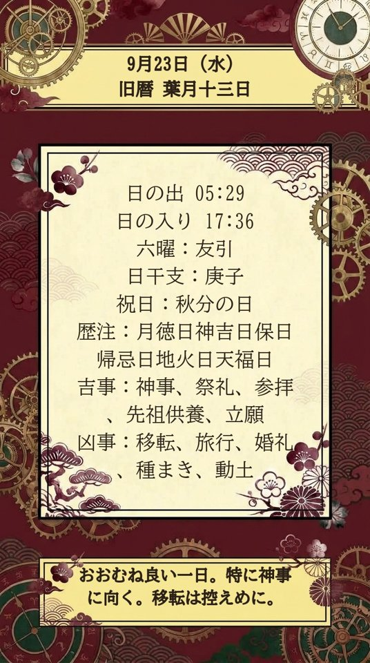

萬年時計だより
萬年時計 × TikTok 連携
「萬年時計だより」は、萬年時計が算出したその日の暦（六曜・日干支・旧暦・二十四節気・七十二候・暦注・吉凶）を1枚の画像にまとめ、毎朝、連携したTikTokアカウントへ自動で投稿する機能です。運営者のアカウント @mannen_dokei で使用しています。

user.info.basic）で、投稿先が正しいことを確認します。video.publish）でそのアカウントへ投稿します。連携はTikTokアプリの「設定とプライバシー → セキュリティと権限 → アプリの権限」からいつでも解除できます。取り扱う情報はプライバシーポリシーをご覧ください。